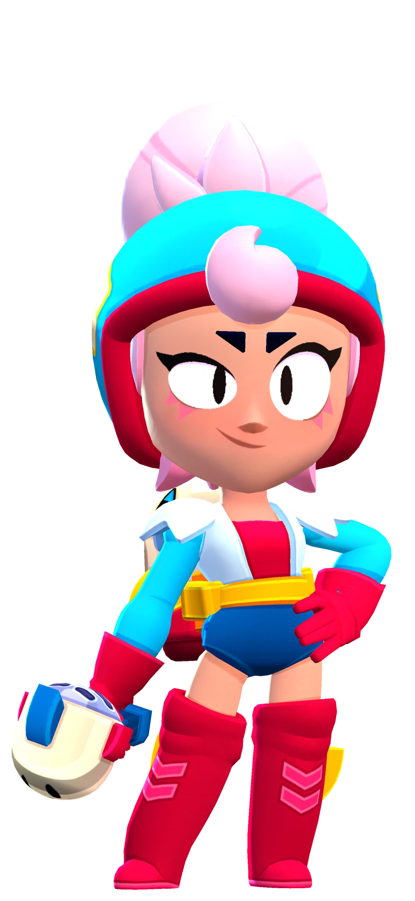

¿Quién es Janet?
!Janet hará lo que sea para alcanzar el estrellato! además, sus habilidades interpretativas son muy útiles a la hora de rescatar a su hermana, Bonnie, cuando esta se mete en problemas
Janet es una Brawler Mítica (anteriormente de rareza Cromática) la cual se podía desbloquear como recompensa de Brawl Pass en el nivel 30 en la temporada 12, o actualmente en el Camino Starr, teniendo un nivel salud y daño moderado. Su ataque es una onda de choque en un cono que se estrecha y se alarga cuanto más se apunta. Su Súper le permite volar continuamente sobre obstáculos mientras arroja bombas sobre los enemigos que infligen daño en el área.
|  |
NIVEL DE FUERZA 11 |
Sus gadgets
ALTAVOZ: Janet despliega un altavoz que inflige 188 puntos de daño por segundo a todos los rivales que estén dentro de su alcance hasta ser destruido. |
ENTREBAMBALINAS: El siguiente agudo de Janet la empuja hacia atrás, incluso por encima de los muros. Mientras mas centrado sea su ataque, mas lejos sera empujada. |
Sus habilidades estelares
 |
ARRIBA EL TELÓN: Mientras se encuentra en el aire con su mochila propulsora, Janet revela una zona grande de arbustos a su alrededor. |
 |
CALENTAMIENTO VOCAL: El ataque de Janet se centra un 30% más rápido. |
 Braian Arancibia
Braian Arancibia Aya El Baarar
Aya El Baarar